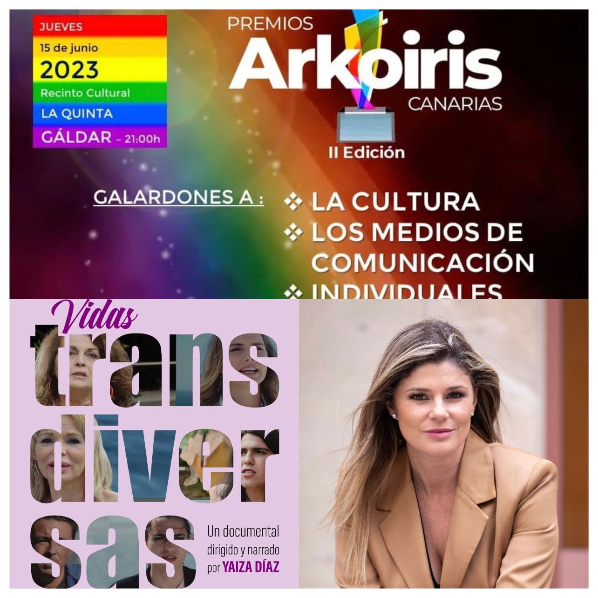

Finalista en los Premios Arcoíris 2023 por la visibilidad del colectivo LGTBIQ+. Un reconocimiento al periodismo social que busca dar voz a colectivos a menudo silenciados.
Yaiza Díaz dirigió, guionizó y presentó el programa de investigación científica Nivel 4. Partiendo de un documento desclasificado de la marina americana, Yaiza Díaz investiga sobre una base secreta que existió en la isla de La Palma durante la Guerra Fría. En esta base se utilizaba el sistema SOSUS, un sistema de escucha basado en hidrófonos. Muchos de los lugareños a día de hoy no son conscientes de que los palmeros fueron los oídos para los americanos y que la misión era detectar en el Atlántico los submarinos soviéticos. En esta trilogía descubrimos que bajo el mar de Canarias hay un auténtico tesoro de minerales como el telurio, el cobalto y las tierras raras. Se estima que el mundo necesitará 40 veces más minerales para continuar con el avance tecnológico. Estos bienes los extraemos de la naturaleza que ha tardado millones de años en formarlos, no sabemos si se volverán a generar y no sabemos qué consecuencias podría tener para los seres vivos. Sin embargo la guerra por los recursos es un hecho. Hay 8 países luchando para hacerse con los derechos de explotación en los montes submarinos de Canarias, en ellos están las “vitaminas de la industria” lo necesario para hacer coches, tablets o cualquier artilugio tecnológico. Díaz entrevista a importantes se expertos internacionales, como Sylvia Earle, autora de numerosos documentales para National Geographic desde 1998 y la primera científica jefe de la Administración Nacional Oceánica y Atmosférica, siendo nombrada por la revista Time como el primer Héroe del planeta en 1998, o el coronel Pedro Baños, colaborador entre otros programas de Cuarto Milenio y se adelanta al futuro planteando ¿Qué pasaría si se extrajeran estos minerales del mar de Canarias?.
Cada vez somos más, vivimos más y siguen naciendo personas. Somos muchos en el planeta y cada año consumimos más recursos de los que la tierra puede darnos. Tenemos una deuda ecológica, que produce el cambio climático y la progresiva destrucción del planeta. Llegaremos al “punto de no retorno en 2050” y no sabemos si podremos revertir la situación y recuperar la salud del planeta. Hay un movimiento que piensa que para ello tenemos que extinguirnos, se trata del Movimiento por la Extinción Humana Voluntaria, lo creó hace 30 años un profesor de Portland, Les U. Knight, que participa en el programa. Este movimiento defiende que hay que controlar la natalidad de manera voluntaria (no teniendo hijos) para equilibrar el consumo de recursos, evitar situaciones de pobreza y poder equilibrar también la salud del planeta. Pero reducir la población es algo que se torna complicado. Los expertos señalan que seremos 11.000 millones de personas en 2021 y no ven tanto el problema el número, sino en cómo adaptemos nuestra forma de producción y consumo. La aproximación de una sexta extinción masiva está en camino, puede que ocurra de la mano del hombre o por un meteorito, tal vez un virus. Pero hasta que esto ocurra ¿Cómo debemos vivir? Todas las direcciones apuntan a políticas verdes y reducción de emisiones sin gran dependencia de combustibles fósiles. Las preguntas son ¿podremos hacerlo antes de 2050? ¿será la tecnología la que nos salve o tendremos que mudarnos de planeta? Todo esto podrás verlo en el reportaje elaborado por Yaiza Díaz “Hasta que nos extingamos” dentro del programa Noche de Reporteros.
La larga esperanza de vida y el hecho de que cada vez nazcan menos personas, nos lleva a tener una población envejecida y con muchos achaques. La saturación en los centros de salud es una asignatura pendiente, pero ha llegado algo que a ojos de algunos expertos ayudará a evitar esto y revolucionará el sector: la Telemedicina y la Inteligencia Artificial. Ahora los médicos tendrán que ir de la mano de los ingenieros, por ello en Noche de Reporteros, Yaiza Díaz se introduce en el área de telecomunicación del ámbito hospitalario y universitario para ver en qué proyectos novedosos se está trabajando en las islas y a nivel mundial. El uso de los wearables, que son relojes, pesas o incluso anillos que miden todas tus afecciones y que obligan al ciudadanos a llevar el control sobre su salud, así como la técnica del machine learning para entrenar a una máquina a detectar enfermedades o la aplicación de la tecnología hiperespectral para una mayor precisión en quirófano, son algunos de estos proyectos que podrás ver en este reportaje. En el programa, se plantea el dilema de si las máquinas llegarán a sustituir algunas profesiones dentro de la medicina. De si los médicos llegarán a fiarse más del diagnóstico digital que del suyo propio. Por otra parte veremos que el uso de estas tecnologías, para las que es necesario contar con datos personales de todos los pacientes, no está exenta de un uso fraudulento. Existe el riesgo de que nuestros datos puedan ser usados en beneficio de ciertas empresas del sector como pueden ser las aseguradoras, por lo que se destaca la necesidad de avanzar al mismo tiempo en ciberseguridad y la bioética.
““Enemigo equivocado” es una trilogía de reportajes de investigación mensuales que se inician sólo 14 días después del aislamiento de la población. El nombre hace alusión a la preparación que hemos tenido para combatir el terrorismo o evitar un apagón eléctrico o un conflicto bélico, pero no ante la sorpresiva manifestación de un enemigo invisible. ¿Nos hemos equivocado de enemigo? En estos documentos periodísticos, Yaiza Díaz, hace un recorrido por los avances científicos de los últimos años, expone las acciones y la evolución de la pandemia a nivel mundial y explica los pasos que se dan en Canarias. La tecnología, la geolocalización y la herramienta BIG Data nos ayudaron a aplanar la curva y entró en juego la preocupación por la privacidad, se seguía nuestro “Rastro Digital” y este, es el nombre que lleva el segundo de los reportajes de la trilogía. La pregunta es esta ocasión fue: ¿Hasta qué punto estábamos dispuestos a usar el arma de la información para nuestra seguridad? Contabilizadas 300.000 bajas parecía que el virus nos daba una tregua y los científicos estaban inmersos en encontrar la vacuna. Pero el mundo esperaba la llegada de nuevas zoonosis , de más virus, y es algo que ya no podíamos ignorar, por ello había que pensar en “La Estrategia”. Este tercer título pone de manifiesto que no podemos seguir atacando a la naturaleza, porque el virus nos demuestra que la necesitamos. Entonces se plantea: ¿Cuál va a ser la estrategia para recuperar la economía sin perjudicar al medioambiente? ¿Canarias podría ser autosuficiente ante un aislamiento? Los reportajes editados por Lourdes Trujillo , dirigidos, guionizados y locutados por Yaiza Díaz junto a sus entrevistas e investigaciones, recogen declaraciones del presidente del Gobierno estatal Pedro Sánchez y de Canarias Ángel Víctor Torres, así como de científicos tales como Dennis Carrol y altos cargos a nivel mundial. Participan de manera directa importantes expertos y científicos de nuestro país como : La catedrática de economía Beatriz López Valcárcel, el Presidente de la Federación Mundial de Medicina Tropical Santiago Mas Coma, el profesor de economía de la Universidad de Barcelona Carlos Cosials, el Director General de Salud Pública José Juan Alemán , el epidemiólogo Lucas González, Jesús Rodríguez, Director Tecnológico del ITER, el investigador de la UPM Rafael Cascón, la abogada de Ceca Magán Noemí Brito, Alberto González del ISTAC , los Directores de los Institutos de Medicina Legal de Canarias Jesús Vega y María Melián y el jefe de enfermedades infecciosas del HUNSC Marcelino Hayek, entre otros.
Finalista en los Premios Arcoíris 2023 por la visibilidad del colectivo LGTBIQ+. Un reconocimiento al periodismo social que busca dar voz a colectivos a menudo silenciados.

Finalista Premios Arcoíris 2023
En este reportaje para los informativos de Televisión Canaria, Yaiza Díaz se adentra en la dura realidad de los trastornos de la conducta alimentaria. A través del impactante testimonio de un joven que logró superar la enfermedad y el análisis de expertas de la asociación ALABENTE, se exploran las causas, los peligros de las redes sociales y se ofrece un mensaje de esperanza, demostrando que la recuperación es posible.
Este reportaje de Radio Televisión Canaria (RTVC), presentado por Yaiza Díaz, ofrece una mirada profunda a la evolución y los desafíos de las mujeres en la política de las Islas Canarias. A través de entrevistas con destacadas figuras políticas femeninas de diversas formaciones, el video explora cómo han roto barreras en un mundo tradicionalmente dominado por hombres. Desde la constitución del Parlamento de Canarias en 1982, con una sola mujer entre sus miembros, hasta la actualidad, donde se ha logrado una mayoría femenina en la cámara legislativa, el reportaje narra un camino de avances significativos. Sin embargo, también pone de manifiesto las desigualdades que aún persisten, como la escasa representación de mujeres en las alcaldías y en la presidencia de los cabildos. Las protagonistas comparten sus experiencias personales, relatando cómo se han sentido observadas y sometidas a un mayor nivel de exigencia, y la constante necesidad de acreditar su valía. Además, se abordan temas cruciales como la ley de igualdad, la difícil conciliación de la vida familiar y laboral, y la lucha continua por una igualdad real y efectiva en todos los ámbitos del poder. Un análisis revelador sobre el pasado, presente y futuro de la mujer en la política canaria.
{kind=link}